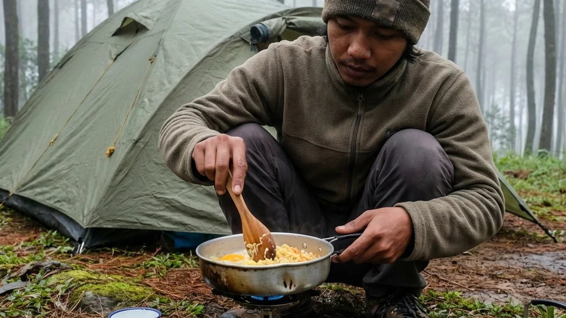

Di era digital yang serba cepat ini, di mana segala sesuatu dapat diakses melalui ujung jari dan layar kaca, manusia semakin kehilangan sentuhan otentik dengan bumi tempatnya berpijak. Fenomena liburan mewah seperti glamping memang menawarkan kenyamanan tanpa batas, namun bagi sebagian jiwa petualang, kemewahan tersebut justru menciptakan sebuah dinding pembatas yang menjauhkan mereka dari esensi alam yang liar. Oleh karena itu, kerinduan untuk kembali membumi dan merasakan tetesan embun secara langsung kian menguat di kalangan para penikmat alam.
Bila Anda adalah salah satu dari jiwa yang mendambakan pengalaman tersebut, maka penelusuran tentang Sensasi Otentik Batu Camping: Menyatu dengan Alam Pegunungan Menggunakan Tenda Dome Klasik adalah sebuah panggilan jiwa. Menginap menggunakan tenda dome konvensional di lereng pegunungan Kota Batu bukanlah tentang mencari penderitaan, melainkan sebuah ritual untuk menghargai kesederhanaan, menguji kemandirian, dan meresapi kedamaian batin. Artikel ini akan membedah secara filosofis dan teknis mengapa gaya berkemah klasik ini tak lekang oleh waktu, bagaimana mempersiapkannya dengan cerdas, hingga etika apa saja yang harus dijunjung tinggi saat Anda bertamu ke rumah alam.
1. Kembalinya Tren Berkemah Klasik di Era Modern
Sehebat apa pun teknologi perhotelan dan wisata berkembang, insting purba manusia untuk menyatu kembali dengan alam liar tidak akan pernah bisa dihapuskan.
Kerinduan akan Petualangan Alam Murni
Generasi masa kini hidup dalam kepompong kenyamanan (comfort zone). Namun anehnya, hal ini justru melahirkan sebuah kebosanan yang akut. Berkeringat saat mendirikan kerangka tenda, memegang pasak besi yang dingin, hingga berjuang menyalakan kompor lapangan di tengah hembusan angin adalah bentuk katarsis fisik yang sangat memuaskan. Petualangan murni ini memicu adrenalin dan hormon dopamin yang tidak bisa Anda beli dengan uang di *resort* semewah apa pun.
Mengapa Tenda Dome Klasik Tetap Bertahan?
Tenda dome berbentuk setengah bola ini adalah ikon tak terbantahkan dari aktivitas pendakian dan perkemahan di seluruh dunia. Desain aerodinamisnya diciptakan secara khusus untuk memecah terpaan angin badai gunung dari segala sisi. Dibandingkan dengan tenda glamping berbahan kanvas tebal yang permanen, tenda dome memberikan Anda kebebasan (freedom). Anda berada hanya beberapa milimeter dari tanah rumput, Anda bisa mendengar gemerisik daun dengan amat jelas, dan Anda benar-benar merasakan sensasi tidur "bersama" alam, bukan sekadar "di dalam" alam.
BACA JUGA (Edukasi Berkemah):
2. Daya Tarik Otentik Wisata Batu Camping
Kota Batu bukan hanya sebatas destinasi liburan keluarga biasa; secara geografis, ia adalah kanvas petualangan yang teramat kaya bagi para pecinta alam sejati.
Kesejukan Alami Pegunungan Panderman dan Arjuno
Berada di ceruk lembah yang dikelilingi oleh jajaran Gunung Arjuno, Welirang, dan Panderman, Kota Batu memiliki iklim mikro yang sangat ideal untuk menguji nyali. Pada malam hari, suhu di dalam tenda dome Anda bisa anjlok menyentuh angka 12 hingga 14 derajat Celcius. Menghadapi suhu beku (bediding) ini di dalam tenda klasik memberikan kepuasan tersendiri; Anda akan belajar bagaimana menghargai secangkir air panas dan sehelai jaket hangat layaknya harta karun yang paling berharga.
Harmoni Visual di Bawah Kanopi Hutan Pinus
Mendirikan tenda dome berwarna mencolok (kuning, merah, atau oranye) di tengah hamparan hijau hutan pinus yang berjejer rapi menciptakan sebuah harmoni visual (aesthetic) yang amat luar biasa. Pagi harinya, ketika Anda membuka ritsleting pintu tenda, Anda tidak melihat perabotan hotel, melainkan langsung disambut oleh sinar matahari (Ray of Light) yang membias menerobos embun dan tajuk-tajuk pinus yang basah.

Penggunaan tenda tipe dome yang berspesifikasi ganda (double layer) adalah syarat mutlak agar petualangan alam Anda tidak berujung pada siksaan fisik akibat hipotermia. (Dokumentasi: Batu Sunrise Camp)3. Persiapan Matang untuk Sensasi Berkemah yang Sempurna
Alam bebas tidak pernah pandang bulu. Kesalahan dalam persiapan logistik saat melakukan Sensasi Otentik Batu Camping: Menyatu dengan Alam Pegunungan Menggunakan Tenda Dome Klasik bisa berakibat fatal bagi keselamatan Anda.
Memilih Tenda Dome Double Layer yang Tepat
Bawalah tenda yang tepat atau sewa dari pengelola yang paham standar keamanan. Wajib hukumnya menggunakan tenda bertipe Double Layer. Lapisan dalam (inner) berupa jaring berfungsi untuk memberikan sirkulasi napas, sedangkan lapisan luar (flysheet) bertugas 100% menahan guyuran hujan dan hempasan angin. Jika Anda menggunakan tenda satu lapis (single layer) murahan, dipastikan Anda akan mandi embun di tengah malam akibat proses kondensasi dari uap napas Anda sendiri.
Sistem Tidur (Sleep System) Esensial bagi Pendaki
Dalam kemah otentik, Anda tidak difasilitasi dengan kasur *springbed*. Sebagai gantinya, Anda harus meracik Sleep System yang mumpuni. Mulailah dengan menggelar matras aluminium foil di dasar tenda untuk menahan radiasi dingin dari tanah, lalu tumpuk dengan matras spons (foam mat) atau matras angin (air pad). Terakhir, bungkus seluruh tubuh Anda menggunakan kantong tidur (sleeping bag) tipe mummy berbahan polar yang tebal agar panas tubuh Anda terkunci rapat hingga fajar menyingsing.
4. Aktivitas Klasik Penghangat Suasana Perkemahan
Kemah yang otentik menuntut Anda untuk proaktif bergerak. Tidak ada pelayan restoran yang akan mengantarkan sarapan pagi ke depan tenda Anda.
Memasak Menggunakan Nesting dan Kompor Portabel
Seni bertahan hidup (*survival*) yang paling menyenangkan adalah memasak di lapangan (camp cooking). Gunakan kompor gas portabel berukuran mini yang dihalangi oleh windshield (pelindung angin). Memasak nasi, menggoreng telur, atau merebus air kopi menggunakan panci bersusun aluminium (nesting) memberikan sensasi rasa makanan yang seratus kali lipat lebih nikmat karena bumbu utama dari makanan tersebut adalah rasa lapar dan udara yang dingin.
Berbagi Cerita di Sekitar Api Unggun
Setelah perut terisi, aktivitas komunal yang tidak boleh dilewatkan adalah menyalakan perapian. Duduklah melingkar di area fire-pit bersama rekan perjalanan Anda. Biarkan gawai (smartphone) Anda tersimpan di dalam tas. Hangatnya bara api akan mencairkan ego, dan momen ini adalah waktu yang amat sakral untuk melangsungkan deep-talk, berbagi cerita hidup, dan merekatkan kembali ikatan batin yang mungkin merenggang akibat kesibukan kerja di kota.
BACA JUGA (Destinasi & Spot Foto):
5. Menjaga Etika dan Kelestarian Alam Saat Berkemah
Menjadi seorang petualang sejati tidak hanya diukur dari ketangguhan fisik, melainkan diukur dari seberapa besar adab dan etika Anda dalam memperlakukan alam semesta.
Prinsip Leave No Trace (Bawa Pulang Sampahmu)
Aturan paling suci dalam dunia perkemahan klasik adalah prinsip Leave No Trace (jangan tinggalkan jejak apa pun). Segala bentuk bungkus plastik, sisa makanan basah, botol minuman, hingga puntung rokok wajib Anda kumpulkan ke dalam kantong sampah (trash bag) mandiri dan Anda bawa turun kembali ke kota. Meninggalkan sampah di alam bukan hanya merusak estetika visual, tetapi juga akan meracuni ekosistem tanah dan membahayakan siklus hidup hewan-hewan lokal.
Menghormati Satwa Liar dan Sesama Pengunjung
Ingatlah bahwa Anda adalah tamu di hutan tersebut. Hindari menyalakan musik melalui *speaker* dengan volume yang memekakkan telinga di malam hari, karena hal itu tidak hanya mengganggu waktu istirahat tetangga tenda Anda, namun juga membuat stres satwa burung liar yang bermukim di tajuk pohon pinus. Nikmatilah white noise alami yang disajikan oleh alam secara hening dan syahdu.
6. Kesimpulan
Bermalam di alam bebas bukan semata-mata mencari tempat tidur yang baru; ia adalah proses kontemplasi dan penemuan kembali jati diri. Menyelami Sensasi Otentik Batu Camping: Menyatu dengan Alam Pegunungan Menggunakan Tenda Dome Klasik mengajarkan kita banyak hal tentang kerendahan hati, kemandirian, dan rasa syukur atas hangatnya pancaran sinar matahari pagi. Udara dingin pegunungan Kota Batu, dipadukan dengan kesederhanaan tenda dome dan hangatnya seduhan kopi dari panci *nesting*, merupakan sebuah kombinasi petualangan yang tak lekang oleh waktu. Pastikan Anda mempersiapkan tenda berspesifikasi ganda (double layer) dan pakaian hangat yang memadai. Setelah itu, melangkahlah ke luar dari zona nyaman peradaban kota Anda, jagalah kelestarian alam dengan sepenuh hati, dan biarkan keagungan magis pegunungan Batu merestorasi jiwa Anda menjadi manusia yang terlahir kembali dengan semangat baru.